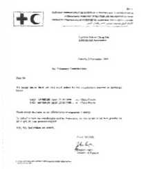

| Reçus |
En septembre 1999, une grave inondation a eu lieu en Chine continentale. Maître Suprême Ching Hai a apporté une contribution à hauteur de 120000 $. Le reçu de la Fédération Internationale de la Croix Rouge et des Sociétés Croissant Rouge est reproduit ci-dessous (veuillez vous reporter au n° 105 pour plus de détails).
Genève, 2 novembre 1999
Réf : contribution volontaire
Chère Maître,
Nous voudrions vous adresser tous nos remerciements pour la contribution reçue et mentionnée ci-dessous.
USD 19 980 00 datée du 22.09.99 pour les inondations en Chine
USD 100 000 00 datée du 22.09.99 pour les inondations en Chine
Veuillez tenir cette lettre comme notre attestation officielle de reçu.
De la part des bénéficiaires et de la Fédération, nous voulons vous faire part de toute notre reconnaissance pour votre généreux soutien.
Avec nos meilleurs sentiments.
Bien à vous.
Stephen Ingles
Directeur des finances